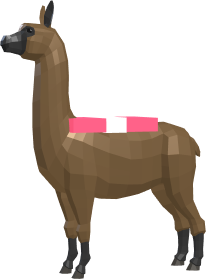
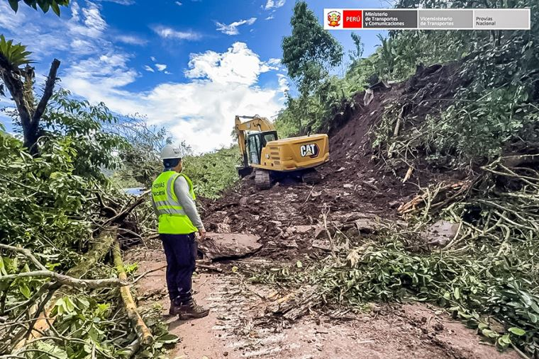
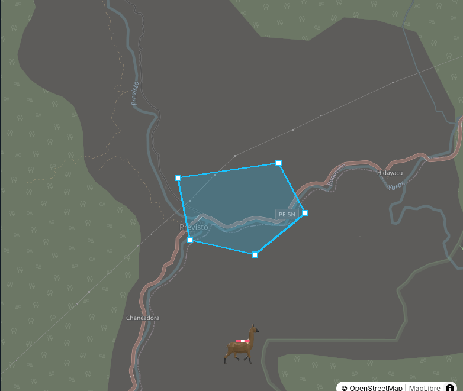
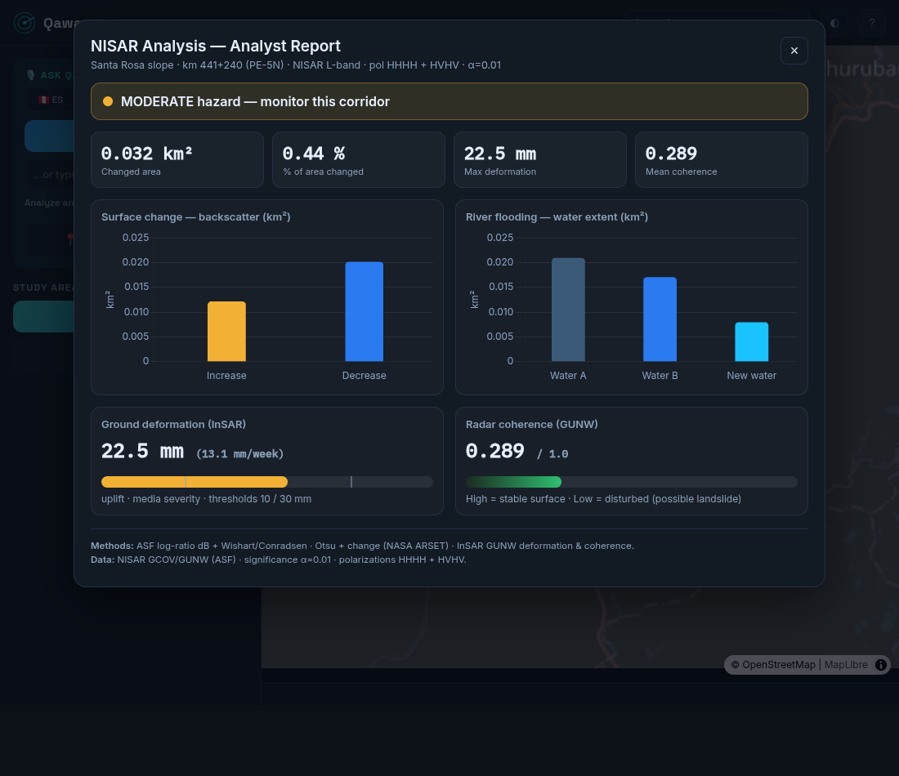

Let me tell you about a night I can't forget.
The mountain came down onto the Federico Basadre highway, at km 441+240, deep in the jungle of Padre Abad. 140 meters of road, buried. A cargo truck, trapped. Drivers stranded in the dark since the night before.
Nobody was watching that hillside — so nobody saw it coming.
That is why I exist: to watch these roads from space, and warn the next truck before it is too late.

From the Qaway app on their phone — mounted on the dashboard — a driver just talks, both hands on the wheel, and Qaway replies out loud.
No voice here — an engineer draws the exact area, and I answer with rigorous NISAR statistics.


Real NISAR data over the Santa Rosa hillside (km 441+240), in the two weeks before the 1 November collapse.
I don't just report disasters. I warn before them.